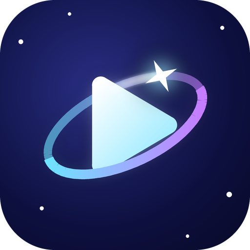
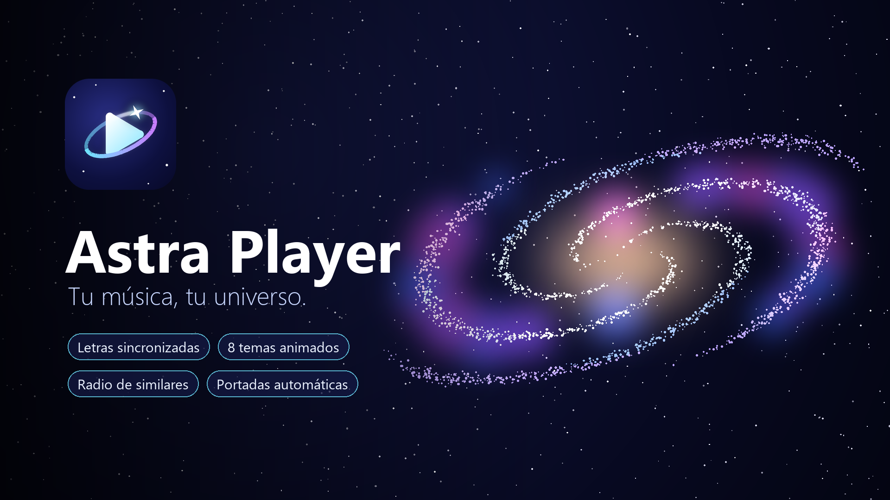

Astra Player
Tu música, tu universo.

Letras sincronizadas
Estilo karaoke, línea por línea, al ritmo de la canción.
8 temas animados
Entre ellos COSMOS, con una Vía Láctea que gira y un cometa que activa un ecualizador.
Radio de similares
Arma una lista con canciones parecidas de tu propia biblioteca.
Portadas y nombres automáticos
Completa las portadas que falten y corrige los nombres de tus canciones.
Widget y pantalla de bloqueo
Controles con el diseño del tema activo.
Tu música, en tu teléfono
Reproduce tus archivos locales. Sin cuentas ni rastreo.